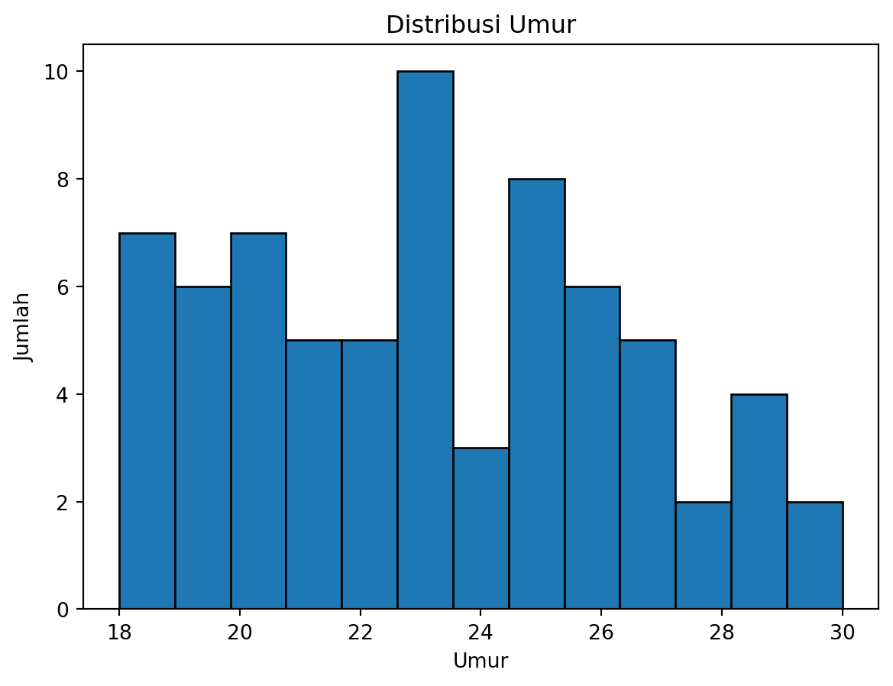
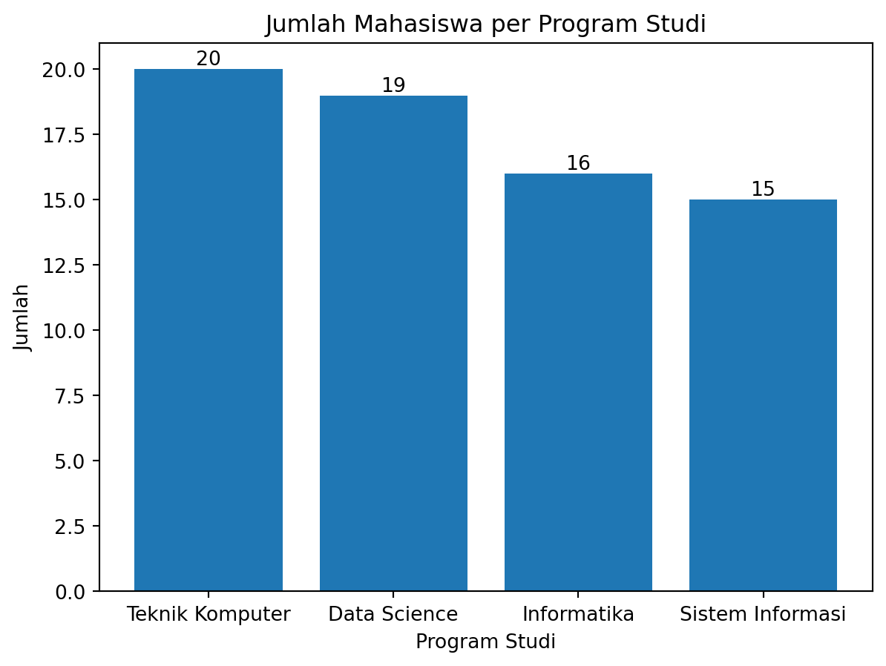

import numpy as np
import pandas as pd
import matplotlib.pyplot as plt
from sklearn.impute import SimpleImputer
from sklearn.compose import ColumnTransformer
from sklearn.preprocessing import OneHotEncoder, StandardScaler
from sklearn.model_selection import train_test_split
from sklearn.linear_model import LinearRegressionTugas 1 Machine Learning
1 Pendahuluan
Nama: Muhammad Hidayat
NIM: 052747132Tujuan dari tugas ini adalah untuk mempersiapkan dataset yang akan digunakan dalam proses pemodelan machine learning. Dataset yang digunakan memiliki beberapa permasalahan umum, seperti data yang hilang dan inkonsistensi format data, sehingga memerlukan langkah-langkah preprocessing untuk memastikan kualitas data sebelum digunakan dalam model.
2 Persiapan Lingkungan
2.1 Library yang digunakan
Penjelasan mengenai library yang digunakan:
numpy: digunakan untuk operasi matematika dan manipulasi arraypandas: digunakan untuk manipulasi dan analisis data, fondasi untuk DataFramematplotlib.pyplot: digunakan untuk membuat visualisasi datasklearn.impute.SimpleImputer: digunakan untuk mengisi data yang hilangsklearn.compose.ColumnTransformer: digunakan untuk menggabungkan transformasi kolomsklearn.preprocessing.OneHotEncoder: digunakan untuk mengonversi data kategorikal menjadi numeriksklearn.preprocessing.StandardScaler: digunakan untuk melakukan normalisasi datasklearn.model_selection.train_test_split: digunakan untuk membagi data menjadi data latih dan data ujisklearn.linear_model.LinearRegression: digunakan untuk pemodelan regresi linear
2.2 Dataset
Dataset yang digunakan, dataset_tugas1_preprocessing.csv, berisi informasi mahasiswa dari berbagai program studi. Dataset ini sengaja dirancang dengan beberapa permasalahan umum dalam dunia nyata, seperti data yang hilang (missing values), inkonsistensi format data, serta tipe data kategorikal yang belum siap diproses oleh model machine learning.
Langkah pertama dalam eksplorasi data adalah memuat dataset ke dalam DataFrame menggunakan pandas.
# Memuat dataset
data = pd.read_csv('dataset_tugas1_preprocessing.csv')
# Menampilkan beberapa baris pertama dari dataset
display(data.head())| ID | Nama | Jenis_Kelamin | Prodi | Status | Nilai_Akhir | Tanggal_Ujian | Umur | |
|---|---|---|---|---|---|---|---|---|
| 0 | MH001 | Iwan | Laki-laki | Teknik Komputer | Aktif | NaN | 13-04-2020 | NaN |
| 1 | MH002 | Eka | Perempuan | Teknik Komputer | Lulus | E | 2020/12/11 | 28.0 |
| 2 | MH003 | Iwan | Laki-laki | Teknik Komputer | Aktif | NaN | 2021/11/21 | 23.0 |
| 3 | MH004 | Eka | Perempuan | Teknik Komputer | Aktif | D | 2021/08/19 | 18.0 |
| 4 | MH005 | Joko | Perempuan | Data Science | Aktif | C | 2020/01/05 | 26.0 |
Beberapa baris pertama dari dataset
3 Eksplorasi Data
Sebelum melakukan pemodelan, penting untuk memahami struktur dan kualitas data yang kita miliki. Salah satu langkah awal adalah mengetahui struktur dataset, termasuk jumlah baris dan kolom, serta tipe data dari setiap kolom.
Dari Tabel 1, terdapat 99 baris data, tiapa baris mewakili satu mahasiswa, dan terdapat 8 kolom yang memberikan informasi tentang mahasiswa tersebut. Berikut adalah penjelasan singkat mengenai setiap kolom:
- ID: Merupakan identifier unik untuk setiap mahasiswa. Ini biasanya digunakan oleh Nomor Induk Mahasiswa (NIM). Dalam hal ini, ID berupa format
MHXXXdimanaXXXadalah angka yang menunjukkan urutan mahasiswa. - Nama: Merupakan nama lengkap mahasiswa. Ini digunakan sebagai pelengkap dalam identifikasi mahasiswa.
- Jenis_Kelamin: Merupakan jenis kelamin mahasiswa, yang dapat berupa ‘Laki-laki’ atau ‘Perempuan’.
- Prodi: Merupakan program studi yang diikuti oleh mahasiswa, seperti ‘Informatika’, ‘Teknik Komputer’, ‘Data Science’, dll.
- Status: Merupakan status mahasiswa, yang dapat berupa ‘Aktif’, ‘Cuti’, ‘Lulus’, atau ‘DO’ atau “dropout”.
- Nilai_Akhir: Merupakan nilai akhir mahasiswa dalam bentuk mutu huruf, seperti ‘A’, ‘B’, ‘C’, ‘D’, atau ‘E’. Nilai ini menunjukkan performa akademik mahasiswa, dengan ‘A’ sebagai performa terbaik dan ‘E’ sebagai performa terburuk.
- Tanggal_Ujian: Merupakan tanggal ujian yang diikuti oleh mahasiswa. Terdapat dua format, yaittu ‘YYYY/MM/DD’ dan ‘DD-MM-YYYY’. Dalam pemodelan, kita perlu memastikan bahwa format tanggal konsisten agar dapat diproses dengan benar.
- Umur: Merupakan umur mahasiswa dalam tahun.
# Menampilkan informasi tentang dataset
display(data.info())<class 'pandas.DataFrame'>
RangeIndex: 99 entries, 0 to 98
Data columns (total 8 columns):
# Column Non-Null Count Dtype
--- ------ -------------- -----
0 ID 99 non-null str
1 Nama 99 non-null str
2 Jenis_Kelamin 99 non-null str
3 Prodi 99 non-null str
4 Status 99 non-null str
5 Nilai_Akhir 70 non-null str
6 Tanggal_Ujian 99 non-null str
7 Umur 90 non-null float64
dtypes: float64(1), str(7)
memory usage: 6.3 KBNoneMenggunakan data.info(), kita dapat melihat bahwa sebagian besar kolom masih berupa tipe str atau teks, termasuk ‘Tanggal_Ujian’. Data ini akan diolah menjadi tipe data yang sesuai untuk pemodelan.
# Analisis statistik deskriptif untuk kolom numerik
numeric_summary = data.describe()
display(numeric_summary)
# Hitung jumlah entri string unik per kolom
unique_entries = data.apply(lambda col: col.nunique())
# Cetak hasilnya
print("Jumlah entri string unik per kolom:")
display(unique_entries)| Umur | |
|---|---|
| count | 90.000000 |
| mean | 23.366667 |
| std | 3.763963 |
| min | 18.000000 |
| 25% | 20.000000 |
| 50% | 23.000000 |
| 75% | 26.000000 |
| max | 30.000000 |
Jumlah entri string unik per kolom:ID 99
Nama 10
Jenis_Kelamin 2
Prodi 4
Status 4
Nilai_Akhir 5
Tanggal_Ujian 97
Umur 13
dtype: int64# Tampilkan entri string unik untuk setiap kolom
for column in data.columns:
unique_entries = data[column].unique()
if len(unique_entries) <= 10: # Hanya tampilkan jika jumlah entri unik tidak terlalu banyak
print(f"Unique string entries for column '{column}':\n{unique_entries}\n")Unique string entries for column 'Nama':
<StringArray>
['Iwan', 'Eka', 'Joko', 'Gita', 'Adi', 'Hana', 'Dina', 'Budi', 'Citra',
'Farhan']
Length: 10, dtype: str
Unique string entries for column 'Jenis_Kelamin':
<StringArray>
['Laki-laki', 'Perempuan']
Length: 2, dtype: str
Unique string entries for column 'Prodi':
<StringArray>
['Teknik Komputer', 'Data Science', 'Informatika', 'Sistem Informasi']
Length: 4, dtype: str
Unique string entries for column 'Status':
<StringArray>
['Aktif', 'Lulus', 'DO', 'Cuti']
Length: 4, dtype: str
Unique string entries for column 'Nilai_Akhir':
<StringArray>
[nan, 'E', 'D', 'C', 'B', 'A']
Length: 6, dtype: str
Terdapat 2 jenis kelamin, 4 program studi, 4 status mahasiswa, dan 5 nilai akhir yang berbeda. Hal ini menunjukkan perlu dilakukan encoding pada kolom-kolom tersebut agar dapat digunakan dalam model machine learning. Untuk nama, meskipun hanya terdapat 10 entri unik, ini hanya tanda identifikasi mahasiswa, sehingga tidak akan digunakan dalam pemodelan dan tidak perlu diencoding.
Berikut banyak baris per entri unik untuk jenis kelamin, prodi, status, dan nilai akhir.
# Hitung banyak baris per entri unik
# Hanya untuk jenis kelamin, prodi, status, dan nilai akhir
columns = ['Jenis_Kelamin', 'Prodi', 'Status', 'Nilai_Akhir']
for column in columns:
unique_counts = data[column].value_counts()
print(f"Unique counts for column '{column}':\n{unique_counts}\nTotal: {unique_counts.sum()}\n")Unique counts for column 'Jenis_Kelamin':
Jenis_Kelamin
Laki-laki 50
Perempuan 49
Name: count, dtype: int64
Total: 99
Unique counts for column 'Prodi':
Prodi
Teknik Komputer 28
Informatika 28
Sistem Informasi 23
Data Science 20
Name: count, dtype: int64
Total: 99
Unique counts for column 'Status':
Status
Cuti 29
DO 26
Aktif 25
Lulus 19
Name: count, dtype: int64
Total: 99
Unique counts for column 'Nilai_Akhir':
Nilai_Akhir
C 17
D 16
A 16
B 12
E 9
Name: count, dtype: int64
Total: 70
Selain itu, dari lima kolom pertama yang ditampilkan, terdapat beberapa nilai yang hilang (NaN) pada kolom ‘Nilai_Akhir’ dan ‘Umur’. Untuk mengetahui jumlah nilai yang hilang pada setiap kolom, kita dapat menggunakan fungsi isnull() dan sum(). Dan untuk melihat baris mana saja yang memiliki nilai yang hilang, kita dapat menggunakan fungsi isnull() dengan any(axis=1) untuk memfilter baris yang memiliki setidaknya satu nilai yang hilang.
# Filter baris dengan nilai NA
na_rows = data[data.isnull().any(axis=1)]
# Hitung jumlah total nilai NA
total_cols_na = data.isnull().sum()
# Hitung baris dengan nilai NA
total_rows_na = na_rows.shape[0]
total_na = data.isnull().sum().sum()
# Cetak jumlah nilai NA per kolom
print("Count of NA values per column:")
print(total_cols_na[total_cols_na > 0])
# Cetak baris dengan nilai NA
print("Rows with NA values:")
display(na_rows.tail())
# Cetak jumlah total baris dengan nilai NA
print(f"Total count of rows with NA values: {total_rows_na}")
# Cetak jumlah total nilai NA
print(f"Total count of NA values: {total_na}")Count of NA values per column:
Nilai_Akhir 29
Umur 9
dtype: int64
Rows with NA values:| ID | Nama | Jenis_Kelamin | Prodi | Status | Nilai_Akhir | Tanggal_Ujian | Umur | |
|---|---|---|---|---|---|---|---|---|
| 84 | MH085 | Gita | Laki-laki | Sistem Informasi | Cuti | NaN | 2021/03/20 | NaN |
| 86 | MH087 | Eka | Laki-laki | Teknik Komputer | DO | NaN | 2022/02/06 | 20.0 |
| 91 | MH092 | Eka | Laki-laki | Sistem Informasi | Cuti | NaN | 2021/11/12 | 24.0 |
| 96 | MH097 | Iwan | Laki-laki | Data Science | Lulus | D | 2020/01/11 | NaN |
| 98 | MH099 | Hana | Perempuan | Teknik Komputer | DO | NaN | 2021/10/18 | 19.0 |
Total count of rows with NA values: 35
Total count of NA values: 38Di sini terdapat 29 nilai kosong pada ‘Nilai_Akhir’ dan 9 nilai kosong pada ‘Umur’. Hal ini menunjukkan bahwa kita perlu melakukan penanganan terhadap data yang hilang sebelum melanjutkan ke tahap pemodelan.
4 Preprocessing Data
Di sini, kita akan melakukan beberapa langkah preprocessing untuk menangani permasalahan yang ada dalam dataset, seperti data yang hilang, inkonsistensi format tanggal, dan encoding data kategorikal. Data yang diproses ini akan ditaruh dalam variabel data_preprocessed untuk digunakan dalam tahap pemodelan selanjutnya.
Pertama, kita akan membuat dataframe baru dan menyalin semua data dari data aslinya. Kolom ‘ID’ dipertahankan, karena kolom ini bertindak sebagai identifikasi dan tidak akan digunakan dalam pemodelan. Kolom-kolom lainnya akan diproses seperlunya. Dan untuk kolom ‘Nama’, ini akan dihapus karena kolom ini hanya sebagai pelengkap dan tidak akan digunakan dalam pemodelan.
# Membuat dataframe baru untuk data yang sudah diproses
data_preprocessed = data.copy()
# Menghapus kolom 'Nama' karena tidak akan digunakan dalam pemodelan
data_preprocessed.drop(columns=['Nama'], inplace=True)4.1 Penanganan Data yang Hilang
Sebelumnya dalam Bagian 3, kita sudah mengetahui bahwa terdapat nilai yang hilang pada kolom ‘Nilai_Akhir’ dan ‘Umur’. Untuk menangani data yang hilang, metode berikut akan digunakan:
- ‘Nilai_Akhir’: Nilai adalah data yang kritis. Melakukan pengisian nilai akan mengganggu integritas data, sehingga 29 baris dengan nilai yang hilang pada kolom ini akan dihapus.
- ‘Umur’: Data umur tidak terlalu kritis dan bisa diperkirakan berdasarkan data yang ada. Nilai yang hilang pada kolom ini akan diisi dengan nilai rata-rata umur dari data yang tersedia. Metode yang digunakan adalah
SimpleImputerdari librarysklearn, dengan strategi ‘mean’ untuk mengisi nilai yang hilang dengan rata-rata.
# Untuk kolom 'Nilai_Akhir', nilai yang hilang akan dihapus
data_preprocessed = data_preprocessed.dropna(subset=['Nilai_Akhir'])
# Untuk kolom 'Umur', nilai yang hilang akan diisi dengan nilai rata-rata umur
imputer = SimpleImputer(strategy='mean')
data_preprocessed['Umur'] = imputer.fit_transform(data_preprocessed[['Umur']])4.2 Standarisasi Format Tanggal
Kolom ‘Tanggal_Ujian’ memiliki dua format tanggal yang berbeda, yaitu ‘YYYY/MM/DD’ dan ‘DD-MM-YYYY’. Untuk memastikan konsistensi dalam pemrosesan data, kita akan mengubah semua format tanggal menjadi format yang sama sekaligus membuat kolom menjadi tipe data datetime.
Kita akan menggunakan fungsi pd.to_datetime() dari pandas untuk melakukan konversi ini. Dikarenakan terdapat dua format tanggal yang berbeda, kita akan menggunakan parameter format='mixed' untuk memungkinkan pandas mengenali kedua format tersebut. Selain itu, kita juga akan menggunakan parameter yearfirst=True dan dayfirst=True untuk memastikan bahwa pandas dapat mengidentifikasi bagian tahun dan hari dengan benar.
# Mengubah format tanggal menjadi format yang sama dan mengonversi ke tipe datetime
data_preprocessed['Tanggal_Ujian'] = pd.to_datetime(data_preprocessed['Tanggal_Ujian'], errors='raise', format='mixed', yearfirst=True, dayfirst=True)4.3 Encoding Data Kategorikal
Encoding data kategorikal diperlukan agar data tersebut dapat digunakan dalam model machine learning, yang umumnya hanya dapat memproses data numerik. Berikut adalah beberapa asumsi terkait kolom-kolom kategorikal dalam dataset ini beserta metode encoding yang akan digunakan:
- Jenis_Kelamin: Terdapat dua kategori, yaitu ‘Laki-laki’ dan ‘Perempuan’. Kita akan menggunakan encoding manual dengan memberikan nilai 0 untuk ‘Laki-laki’ dan 1 untuk ‘Perempuan’.
- Nilai_Akhir: Terdapat lima kategori, yaitu ‘A’, ‘B’, ‘C’, ‘D’, dan ‘E’. Data ini bersifat ordinal dan memiliki urutan mutu, sehingga kita akan menggunakan encoding manual berbobot dengan memberikan nilai 4 untuk ‘A’, 3 untuk ‘B’, 2 untuk ‘C’, 1 untuk ‘D’, dan 0 untuk ‘E’.
- Status: Terdapat empat kategori, yaitu ‘Aktif’, ‘Cuti’, ‘Lulus’, dan ‘DO’. Untuk mempermudah proses encoding, kita akan menggunakan one-hot encoding, yang akan menghasilkan empat kolom baru, masing-masing untuk setiap kategori status, dengan nilai 1 jika mahasiswa memiliki status tersebut dan 0 jika tidak.
- Prodi: Terdapat empat kategori, yaitu ‘Informatika’, ‘Teknik Komputer’, ‘Data Science’, dan ‘Sistem Informasi’. Sama seperti ‘Status’, kita akan menggunakan one-hot encoding untuk kolom ini.
# Kategori untuk jenis kelamin (manual)
gender_categories = {'Laki-laki': 0, 'Perempuan': 1}
# Kategori untuk nilai akhir (manual, berbobot)
grade_categories = {'A': 4, 'B': 3, 'C': 2, 'D': 1, 'E': 0}Untuk encoding manual, operasi map sederhana akan digunakan. Sedangkan untuk melakukan one-hot encoding, kita akan menggunakan fungsi get_dummies dari pandas. Alternatif lain untuk melakukan one-hot encoding adalah dengan menggunakan ColumnTransformer dan OneHotEncoder dari library sklearn, namun prosesnya lebih kompleks, sehingga tidak akan digunakan di sini.
# menggunakan pd.get_dummies() untuk melakukan one-hot encoding pada kolom 'Status' dan 'Prodi'
# fungsi ini juga membuat salinan data baru, sehingga kita bisa melakukan encoding manual pada kolom 'Jenis_Kelamin' dan 'Nilai_Akhir' tanpa mempengaruhi data asli
data_preprocessed_3 = pd.get_dummies(data_preprocessed, columns=['Status', 'Prodi'], prefix=['Status', 'Prodi'], drop_first=False, dtype=int)
# Melakukan encoding manual untuk kolom 'Jenis_Kelamin' dan 'Nilai_Akhir'
data_preprocessed_3['Jenis_Kelamin'] = data_preprocessed['Jenis_Kelamin'].map(gender_categories)
data_preprocessed_3['Nilai_Akhir'] = data_preprocessed['Nilai_Akhir'].map(grade_categories)
display(data_preprocessed_3[['ID', 'Jenis_Kelamin', 'Nilai_Akhir', 'Tanggal_Ujian', 'Umur', 'Status_Aktif', 'Prodi_Teknik Komputer']].head())| ID | Jenis_Kelamin | Nilai_Akhir | Tanggal_Ujian | Umur | Status_Aktif | Prodi_Teknik Komputer | |
|---|---|---|---|---|---|---|---|
| 1 | MH002 | 1 | 0 | 2020-11-12 | 28.0 | 0 | 1 |
| 3 | MH004 | 1 | 1 | 2021-08-19 | 18.0 | 1 | 1 |
| 4 | MH005 | 1 | 2 | 2020-05-01 | 26.0 | 1 | 0 |
| 5 | MH006 | 1 | 2 | 2021-10-15 | 20.0 | 1 | 1 |
| 6 | MH007 | 0 | 2 | 2020-01-15 | 21.0 | 0 | 0 |
display(data_preprocessed_3.info())
display(data_preprocessed_3.describe())<class 'pandas.DataFrame'>
Index: 70 entries, 1 to 97
Data columns (total 13 columns):
# Column Non-Null Count Dtype
--- ------ -------------- -----
0 ID 70 non-null str
1 Jenis_Kelamin 70 non-null int64
2 Nilai_Akhir 70 non-null int64
3 Tanggal_Ujian 70 non-null datetime64[us]
4 Umur 70 non-null float64
5 Status_Aktif 70 non-null int64
6 Status_Cuti 70 non-null int64
7 Status_DO 70 non-null int64
8 Status_Lulus 70 non-null int64
9 Prodi_Data Science 70 non-null int64
10 Prodi_Informatika 70 non-null int64
11 Prodi_Sistem Informasi 70 non-null int64
12 Prodi_Teknik Komputer 70 non-null int64
dtypes: datetime64[us](1), float64(1), int64(10), str(1)
memory usage: 7.7 KBNone| Jenis_Kelamin | Nilai_Akhir | Tanggal_Ujian | Umur | Status_Aktif | Status_Cuti | Status_DO | Status_Lulus | Prodi_Data Science | Prodi_Informatika | Prodi_Sistem Informasi | Prodi_Teknik Komputer | |
|---|---|---|---|---|---|---|---|---|---|---|---|---|
| count | 70.000000 | 70.000000 | 70 | 70.00000 | 70.000000 | 70.000000 | 70.000000 | 70.000000 | 70.000000 | 70.000000 | 70.000000 | 70.000000 |
| mean | 0.514286 | 2.142857 | 2021-05-27 20:34:17.142857 | 23.15625 | 0.285714 | 0.271429 | 0.214286 | 0.228571 | 0.228571 | 0.285714 | 0.214286 | 0.271429 |
| min | 0.000000 | 0.000000 | 2020-01-15 00:00:00 | 18.00000 | 0.000000 | 0.000000 | 0.000000 | 0.000000 | 0.000000 | 0.000000 | 0.000000 | 0.000000 |
| 25% | 0.000000 | 1.000000 | 2020-08-12 06:00:00 | 20.00000 | 0.000000 | 0.000000 | 0.000000 | 0.000000 | 0.000000 | 0.000000 | 0.000000 | 0.000000 |
| 50% | 1.000000 | 2.000000 | 2021-03-17 12:00:00 | 23.15625 | 0.000000 | 0.000000 | 0.000000 | 0.000000 | 0.000000 | 0.000000 | 0.000000 | 0.000000 |
| 75% | 1.000000 | 3.000000 | 2022-03-08 06:00:00 | 26.00000 | 1.000000 | 1.000000 | 0.000000 | 0.000000 | 0.000000 | 1.000000 | 0.000000 | 1.000000 |
| max | 1.000000 | 4.000000 | 2022-12-31 00:00:00 | 30.00000 | 1.000000 | 1.000000 | 1.000000 | 1.000000 | 1.000000 | 1.000000 | 1.000000 | 1.000000 |
| std | 0.503405 | 1.354389 | NaN | 3.44404 | 0.455016 | 0.447907 | 0.413289 | 0.422944 | 0.422944 | 0.455016 | 0.413289 | 0.447907 |
5 Pemodelan Machine Learning
Selanjutnya, kita akan melakukan pemodelan machine learning. Untuk pemodelan ini, kita akan menggunakan regresi linear untuk melakukan prediksi nilai akhir mahasiswa.
Sebelum melakukan pemodelan, data perlu dinormalisasi. Karena akan menggunakan regresi linear, maka metode normalisasi yang digunakan adalah standarisasi berdasarkan mean dan standar deviasi.
Karena “Tanggal_Ujian” masih dalam bentuk datetime, perlu diubah menjadi bentuk numerik terlebih dahulu.
Untuk melakukan normalisasi, kita akan menggunakan fungsi StandardScaler dari library sklearn:
# Membuat objek StandardScaler
scaler = StandardScaler()
# Membuat salinan tabel data
data_premodel = data_preprocessed_3.copy().drop('ID', axis=1)
# Mengubah 'Tanggal_Ujian' menjadi bentuk numerik
data_premodel['Tanggal_Ujian'] = pd.to_numeric(data_premodel['Tanggal_Ujian'])
# Melakukan standarisasi pada data
data_premodel_scaled = scaler.fit_transform(data_premodel)
data_premodel_scaled_df = pd.DataFrame(data_premodel_scaled, columns=data_premodel.columns)display(data_premodel_scaled_df.head())
display(data_premodel_scaled_df.info())
display(data_premodel_scaled_df.describe())| Jenis_Kelamin | Nilai_Akhir | Tanggal_Ujian | Umur | Status_Aktif | Status_Cuti | Status_DO | Status_Lulus | Prodi_Data Science | Prodi_Informatika | Prodi_Sistem Informasi | Prodi_Teknik Komputer | |
|---|---|---|---|---|---|---|---|---|---|---|---|---|
| 0 | 0.971825 | -1.593582 | -0.595187 | 1.416570 | -0.632456 | -0.610368 | -0.522233 | 1.837117 | -0.544331 | -0.632456 | -0.522233 | 1.638356 |
| 1 | 0.971825 | -0.849910 | 0.251378 | -1.507961 | 1.581139 | -0.610368 | -0.522233 | -0.544331 | -0.544331 | -0.632456 | -0.522233 | 1.638356 |
| 2 | 0.971825 | -0.106239 | -1.184760 | 0.831664 | 1.581139 | -0.610368 | -0.522233 | -0.544331 | 1.837117 | -0.632456 | -0.522233 | -0.610368 |
| 3 | 0.971825 | -0.106239 | 0.423715 | -0.923055 | 1.581139 | -0.610368 | -0.522233 | -0.544331 | -0.544331 | -0.632456 | -0.522233 | 1.638356 |
| 4 | -1.028992 | -0.106239 | -1.508269 | -0.630602 | -0.632456 | -0.610368 | 1.914854 | -0.544331 | 1.837117 | -0.632456 | -0.522233 | -0.610368 |
<class 'pandas.DataFrame'>
RangeIndex: 70 entries, 0 to 69
Data columns (total 12 columns):
# Column Non-Null Count Dtype
--- ------ -------------- -----
0 Jenis_Kelamin 70 non-null float64
1 Nilai_Akhir 70 non-null float64
2 Tanggal_Ujian 70 non-null float64
3 Umur 70 non-null float64
4 Status_Aktif 70 non-null float64
5 Status_Cuti 70 non-null float64
6 Status_DO 70 non-null float64
7 Status_Lulus 70 non-null float64
8 Prodi_Data Science 70 non-null float64
9 Prodi_Informatika 70 non-null float64
10 Prodi_Sistem Informasi 70 non-null float64
11 Prodi_Teknik Komputer 70 non-null float64
dtypes: float64(12)
memory usage: 6.7 KBNone| Jenis_Kelamin | Nilai_Akhir | Tanggal_Ujian | Umur | Status_Aktif | Status_Cuti | Status_DO | Status_Lulus | Prodi_Data Science | Prodi_Informatika | Prodi_Sistem Informasi | Prodi_Teknik Komputer | |
|---|---|---|---|---|---|---|---|---|---|---|---|---|
| count | 7.000000e+01 | 7.000000e+01 | 7.000000e+01 | 7.000000e+01 | 70.000000 | 7.000000e+01 | 7.000000e+01 | 7.000000e+01 | 7.000000e+01 | 70.000000 | 7.000000e+01 | 7.000000e+01 |
| mean | 1.332268e-16 | 3.489272e-17 | -3.747796e-15 | -1.665335e-17 | 0.000000 | 1.490871e-16 | -2.220446e-17 | 2.696256e-17 | 3.806479e-17 | 0.000000 | -2.854859e-17 | 1.490871e-16 |
| std | 1.007220e+00 | 1.007220e+00 | 1.007220e+00 | 1.007220e+00 | 1.007220 | 1.007220e+00 | 1.007220e+00 | 1.007220e+00 | 1.007220e+00 | 1.007220 | 1.007220e+00 | 1.007220e+00 |
| min | -1.028992e+00 | -1.593582e+00 | -1.508269e+00 | -1.507961e+00 | -0.632456 | -6.103679e-01 | -5.222330e-01 | -5.443311e-01 | -5.443311e-01 | -0.632456 | -5.222330e-01 | -6.103679e-01 |
| 25% | -1.028992e+00 | -8.499104e-01 | -8.725889e-01 | -9.230552e-01 | -0.632456 | -6.103679e-01 | -5.222330e-01 | -5.443311e-01 | -5.443311e-01 | -0.632456 | -5.222330e-01 | -6.103679e-01 |
| 50% | 9.718253e-01 | -1.062388e-01 | -2.157447e-01 | 0.000000e+00 | -0.632456 | -6.103679e-01 | -5.222330e-01 | -5.443311e-01 | -5.443311e-01 | -0.632456 | -5.222330e-01 | -6.103679e-01 |
| 75% | 9.718253e-01 | 6.374328e-01 | 8.598472e-01 | 8.316636e-01 | 1.581139 | 1.638356e+00 | -5.222330e-01 | -5.443311e-01 | -5.443311e-01 | 1.581139 | -5.222330e-01 | 1.638356e+00 |
| max | 9.718253e-01 | 1.381104e+00 | 1.760079e+00 | 2.001476e+00 | 1.581139 | 1.638356e+00 | 1.914854e+00 | 1.837117e+00 | 1.837117e+00 | 1.581139 | 1.914854e+00 | 1.638356e+00 |
Langkah selanjutnya adalah membagi data menjadi data latih dan data uji. Data latih digunakan untuk melatih model, sedangkan data uji digunakan untuk menguji performa model yang telah dibuat. Dari soal, diminta untuk membagi data menjadi 80% untuk data latih dan 20% untuk data uji. Untuk membagi data, kita akan menggunakan fungsi train_test_split dari library sklearn. Untuk nilai y, kita akan menggunakan kolom ‘Nilai_Akhir’ sebagai target. Sedangkan untuk nilai X, kita akan menggunakan semua kolom selain ‘Nilai_Akhir’ sebagai fitur.
X = data_premodel_scaled_df.drop('Nilai_Akhir', axis=1)
y = data_premodel_scaled_df['Nilai_Akhir']
# Membagi data menjadi data latih dan data uji
X_train, X_test, y_train, y_test = train_test_split(X, y, test_size=0.2, random_state=42)
# Menampilkan jumlah data latih dan data uji
print("Jumlah data latih:", len(X_train))
print("Jumlah data uji:", len(X_test))Jumlah data latih: 56
Jumlah data uji: 14Setelah melakukan normalisasi dan membagi data menjadi data latih dan data uji, kita akan melakukan pemodelan menggunakan regresi linear dengan fungsi LinearRegression dari library sklearn.
# Membuat objek regresi linear
regressor = LinearRegression()
# Melatih model menggunakan data latih
regressor.fit(X_train, y_train)LinearRegression()In a Jupyter environment, please rerun this cell to show the HTML representation or trust the notebook.
On GitHub, the HTML representation is unable to render, please try loading this page with nbviewer.org.
Parameters
6 Evaluasi Model
Evaluasi model tidak dicakup dalam soal, sehingga tidak dikerjakan.
7 Visualisasi Hasil
Kita akan melakukan visualisasi hasil pemodelan. Untuk visualisasi, kita akan menggunakan library matplotlib.
7.1 Distribusi Umur (histogram)
# bins adalah (max-min) dari umur
bins = int(max(data_preprocessed['Umur']) - min(data_preprocessed['Umur'])+1)
# Membuat histogram
plt.hist(data_preprocessed['Umur'], bins=bins, edgecolor='black')
plt.xlabel('Umur')
plt.ylabel('Jumlah')
plt.title('Distribusi Umur')
plt.show()
7.2 Jumlah Mahasiswa per Program Studi (column chart)
# Membuat column chart
plt.bar(data_preprocessed['Prodi'].unique(), data_preprocessed['Prodi'].value_counts())
plt.xlabel('Program Studi')
plt.ylabel('Jumlah')
plt.title('Jumlah Mahasiswa per Program Studi')
# tambah label angka di atas bar
for i, v in enumerate(data_preprocessed['Prodi'].value_counts()):
plt.text(i, v, str(v), ha='center', va='bottom')
plt.show()
8 Kesimpulan
9 Lampiran
9.1 Diagnostik Python
import IPython as ipy
print(ipy.sys_info()){'commit_hash': 'f5e51b8',
'commit_source': 'installation',
'default_encoding': 'utf-8',
'ipython_path': '/var/home/nord/ContainerHomes/ubuntu-bigdata/miniconda3/envs/machine-learning-tugas/lib/python3.14/site-packages/IPython',
'ipython_version': '9.11.0',
'os_name': 'posix',
'platform': 'Linux-6.17.7-ba25.fc43.x86_64-x86_64-with-glibc2.39',
'sys_executable': '/var/home/nord/ContainerHomes/ubuntu-bigdata/miniconda3/envs/machine-learning-tugas/bin/python',
'sys_platform': 'linux',
'sys_version': '3.14.4 | packaged by Anaconda, Inc. | (main, Apr 14 2026, '
'17:07:44) [GCC 14.3.0]'}